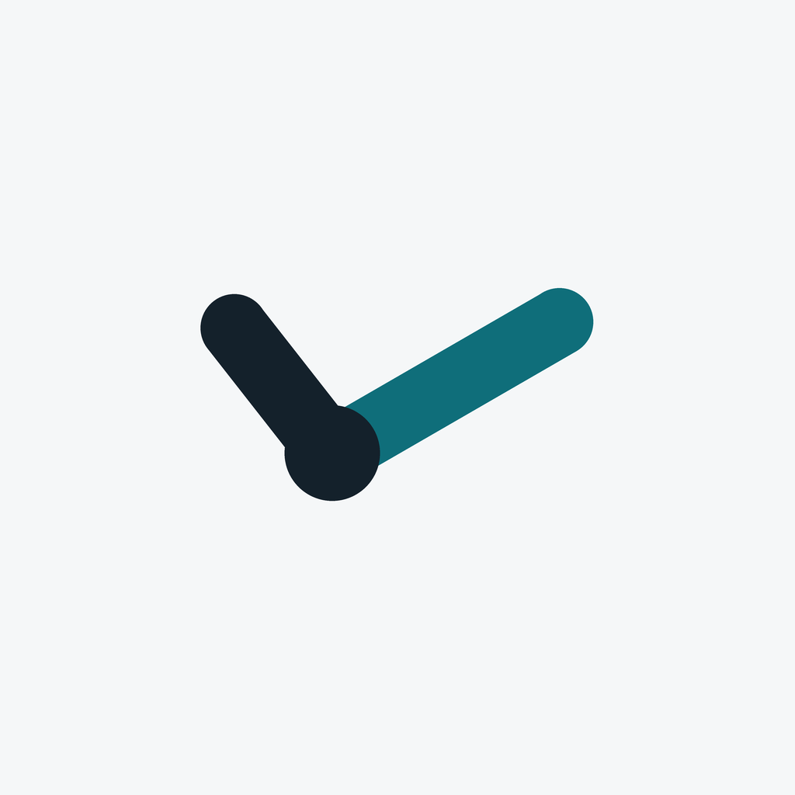

A 3-minute brain check older adults do on their phone, with results their family can follow.
Try it: tap Taking the check, draw a clock at 11:10, then see the family view.
The clock is scored in your browser by the same trained AI model that runs on iPhone (Core ML in the app, ONNX here). Nothing leaves your device.
Native iOS app (Swift, SwiftUI, Core ML): github.com/omarlevi/CPX26
Screening aid, not a diagnosis. CrossPointX 2026, Track 1.